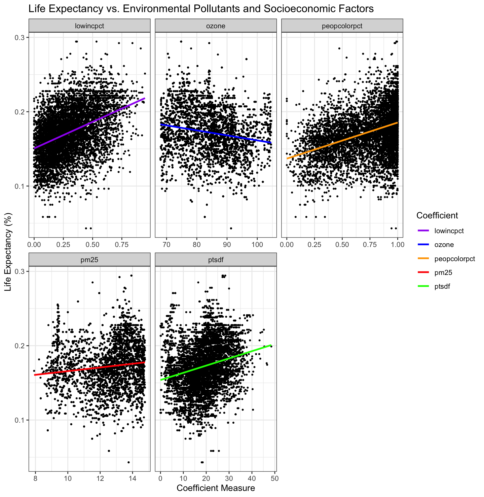
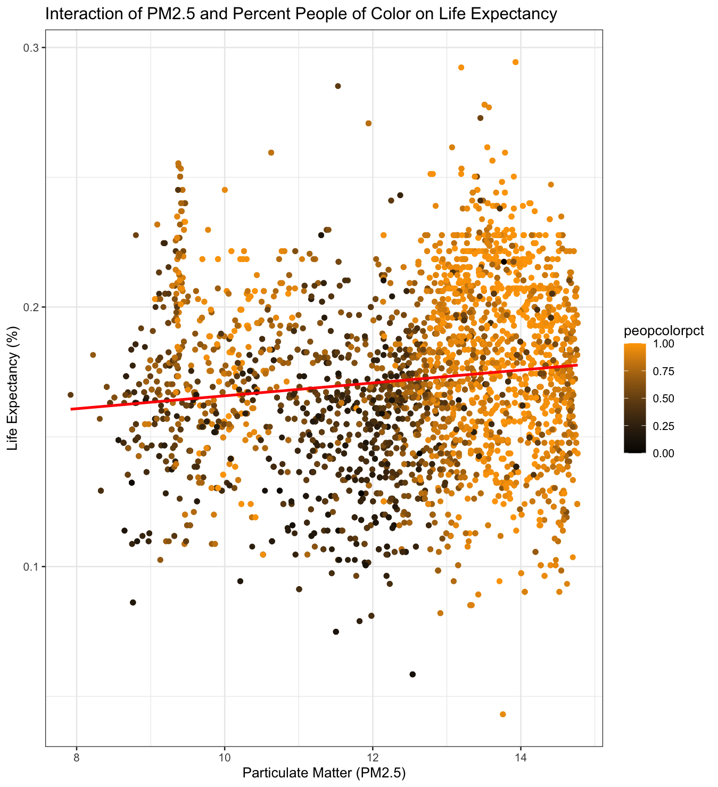
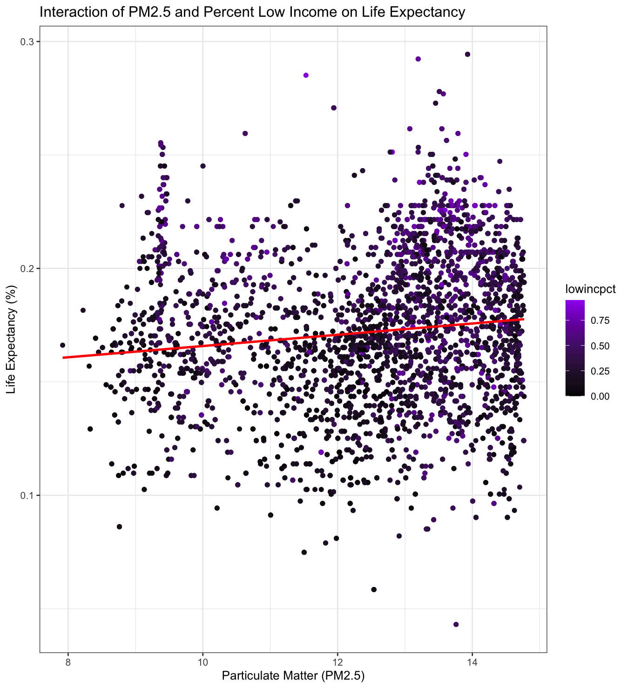
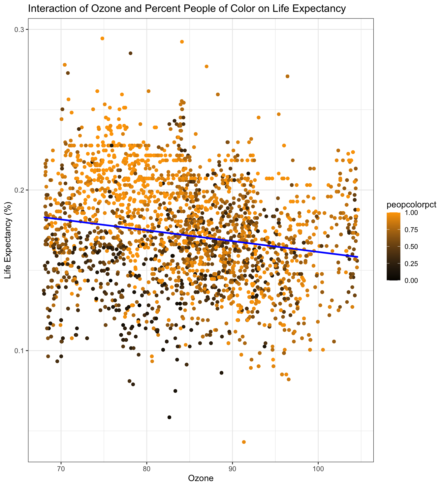
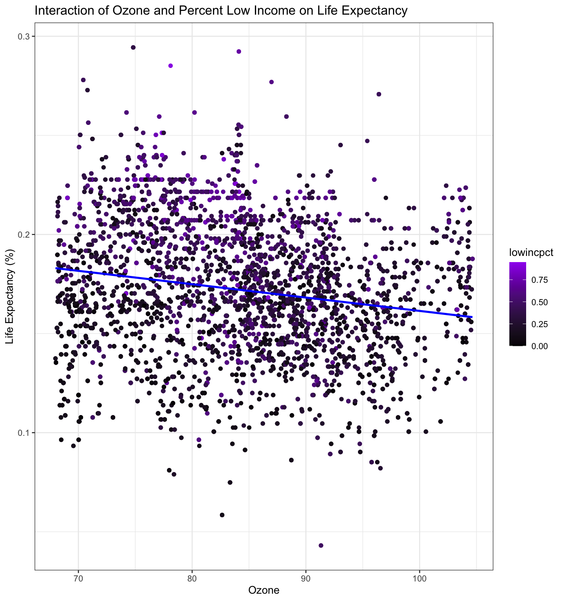
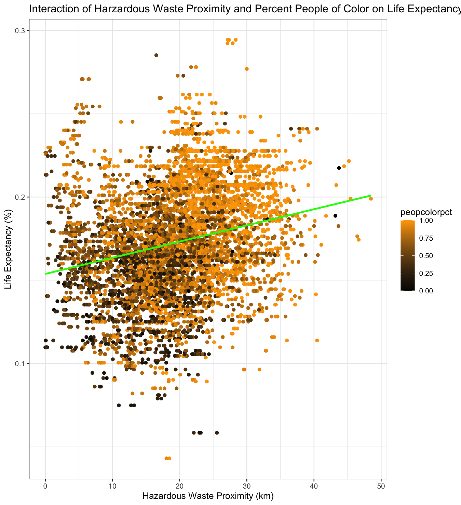
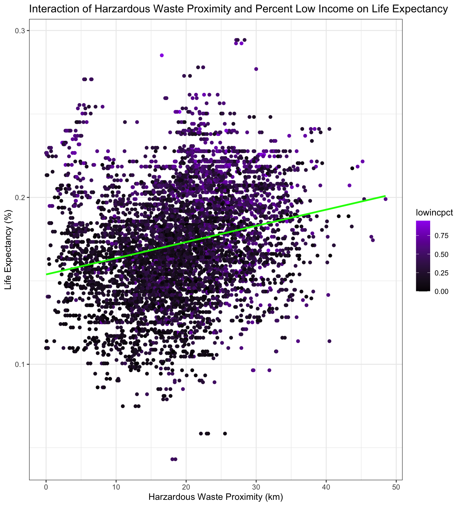

Repository: https://github.com/matteo-torres/ejscreen-LA
Background
Los Angeles County, home to approximately 9.6 million residents, is one of the most diverse regions in the United States. About 30% of its population identifies as people of color, and around 14% are classified as low-income or living in poverty (US Census). Many of these individuals have been adversely affected by the generational impact of historical redlining, a practice that began in the 1930s under the Home Owners’ Loan Corporation (HOLC).
The term “redlining” originates from HOLC’s use of color-coded maps to rank neighborhoods, with green designated as the best and red labeled as hazardous. This practice systematically deepened racial segregation, excluding communities of color from neighborhoods deemed “green,” and primarily benefiting white individuals and neighborhoods. As a result, perceptions of neighborhoods shifted, along with the allocation of resources, living conditions, and overall quality of life for those in red areas.
Evidence suggests that the HOLC grading system is associated with numerous adverse health outcomes and poorer environmental characteristics in present-day neighborhoods (Swope). Some of these include higher levels of pollution, limited access to healthy food, and increased surface temperatures. Despite the passage of time, many residents of Los Angeles continue to bear the consequences of living in these historically redlined areas, which have seen little to no improvement in quality.
The purpose of this study is to statistically analyze current data to understand how pollutants and socioeconomic factors may correlate with life expectancy in Los Angeles County. My goal is to identify trends that deepen our understanding of the current situation in communities that have historically experienced disparities.
About the Data
For this study, I chose to utilize the EJScreen: Environmental Justice Screening and Mapping Tool dataset provided by the Environmental Protection Agency. This CSV file contains a variety of variables that assess different environmental burden indicators, socioeconomic indicators, and health disparity indicators, with Census block groups serving as the primary geographic unit.
To begin my analysis, it is essential to filter the dataset to include only observations from Los Angeles County, select the relevant variables for measurement, and remove any entries with missing data.
Dependent Variable
The primary focus of this statistical analysis is to measure how life expectancy responds to environmental and socioeconomic factors.
- Low Life Expectancy: This measure identifies areas where life expectancy is lower than the national average.
EJScreen employs an inverse approach, where higher values correspond to lower life expectancy, and lower scores indicate higher life expectancy. The percentage of low life expectancy is calculated using the formula:
% Low Life Expectancy = 1 - (Life Expectancy / Max Life Expectancy)
Independent Variables
Environmental Burden Indicators
Particulate Matter 2.5 (PM 2.5): This metric quantifies potential exposure to fine particulate matter (2.5 micrometers or smaller) and is expressed as the annual average concentration in the air, measured in micrograms per cubic meter.
Ozone: The ozone indicator in EJScreen reflects the annual mean of the 10 highest daily maximum 8-hour (MDA8) ozone concentrations.
Hazardous Waste Proximity: This indicator considers the total number of hazardous waste facilities within a 10-kilometer radius of the average resident in each block group, adjusted for distance. It is calculated as a population-weighted average of the blocks within each block group.
Socioeconomic Indicators
People of Color: This group includes individuals who identify as a race other than “white alone” and/or identify their ethnicity as Hispanic or Latino.
Low Income: A household is classified as low income if its income is equal to or less than twice the poverty level, defined as $29,950 by the U.S. Census Bureau.
Limitations
Before continuing onto my analysis plan, it’s important to acknowledge the limitations of the EJScreen dataset.
This tool is not intended to provide a comprehensive risk analysis. Instead, it functions as a screening tool to examine certain issues related to environmental justice. It does not encompass all relevant issues that should be considered, and it strives to balance the need for data quality and national coverage while including as many significant environmental factors as possible within the constraints of available resources.
The dataset relies on demographic and environmental estimates that carry a considerable degree of uncertainty, especially when analyzing smaller geographic areas.
Analysis Plan
Correlation Analysis
- Analyze the pairwise correlations among Environmental Burden Indicators, Socioeconomic Indicators, and Low Life Expectancy.
Regression Models
Model 1: Utilize simple regression to predict life expectancy based on environmental burden indicators (pollutants).
Model 2: Implement multiple linear regression by including socioeconomic indicators as additional predictors.
Model 3: Examine interaction effects to understand how socioeconomic indicators influence the relationship between environmental burden indicators (pollutants) and low life expectancy.
Results
| pm25 | ozone | ptsdf | lowincpct | lifeexppct | peopcolorpct | |
|---|---|---|---|---|---|---|
| pm25 | 1.00 | -0.10 | 0.59 | 0.17 | 0.12 | 0.46 |
| ozone | -0.10 | 1.00 | -0.52 | -0.02 | -0.19 | 0.05 |
| ptsdf | 0.59 | -0.52 | 1.00 | 0.29 | 0.24 | 0.39 |
| lowincpct | 0.17 | -0.02 | 0.29 | 1.00 | 0.41 | 0.52 |
| lifeexppct | 0.12 | -0.19 | 0.24 | 0.41 | 1.00 | 0.38 |
| peopcolorpct | 0.46 | 0.05 | 0.39 | 0.52 | 0.38 | 1.00 |
# Simple regression model
lm(lifeexppct ~ pm25 + ozone + ptsdf, data = los_angeles)| Coefficients | Estimate | Std. Error | t value | Pr(> |
|---|---|---|---|---|
| (Intercept) | 1.841e-01 | 5.296e-03 | 34.765 | < 2e-16 *** |
| pm25 | 1.022e-04 | 3.200e-04 | 0.319 | 0.749 |
| ozone | -3.287e-04 | 5.364e-05 | -6.128 | 9.43e-10 *** |
| ptsdf | 7.626e-04 | 7.584e-05 | 10.056 | < 2e-16 *** |
Residual standard error: 0.03196 on 6289 degrees of freedom Multiple R-squared: 0.06136, Adjusted R-squared: 0.06091 F-statistic: 137 on 3 and 6289 DF, p-value: < 2.2e-16

# Multiple regression model
summary(lm(lifeexppct ~ pm25 + ozone + ptsdf + peopcolorpct + lowincpct, data = los_angeles))| Coefficients | Estimate | Std. Error | t value | Pr(> |
|---|---|---|---|---|
| (Intercept) | 2.146e-01 | 4.870e-03 | 44.072 | < 2e-16 *** |
| pm25 | -1.092e-03 | 2.990e-04 | -3.654 | 0.000261 *** |
| ozone | -7.951e-04 | 4.964e-05 | -16.017 | < 2e-16 *** |
| ptsdf | -1.683e-04 | 7.183e-05 | -2.343 | 0.019141 * |
| peopcolorpct | 3.679e-02 | 1.858e-03 | 19.802 | < 2e-16 *** |
| lowincpct | 4.828e-02 | 2.269e-03 | 21.280 | < 2e-16 *** |
Residual standard error: 0.0286 on 6287 degrees of freedom Multiple R-squared: 0.2486, Adjusted R-squared: 0.248 F-statistic: 416 on 5 and 6287 DF, p-value: < 2.2e-16

# Interaction model (pm25)
summary(lm(lifeexppct ~ pm25 + ozone + ptsdf + lowincpct + peopcolorpct + pm25:lowincpct + pm25:peopcolorpct, data = los_angeles))| Coefficients | Estimate | Std. Error | t value Pr(> | t |
|---|---|---|---|---|
| (Intercept) | 1.762e-01 | 1.015e-02 | 17.369 | < 2e-16 *** |
| pm25 | 2.272e-03 | 8.385e-04 | 2.710 | 0.006750 ** |
| ozone | -8.134e-04 | 4.974e-05 | -16.354 | < 2e-16 *** |
| ptsdf | -1.960e-04 | 7.240e-05 | -2.708 | 0.006796 ** |
| lowincpct | 7.113e-02 | 1.843e-02 | 3.860 | 0.000115 *** |
| peopcolorpct | 8.244e-02 | 1.491e-02 | 5.528 | 3.38e-08 *** |
| pm25:lowincpct | -1.751e-03 | 1.436e-03 | -1.220 | 0.222597 |
| pm25:peopcolorpct | -3.767e-03 | 1.203e-03 | -3.132 | 0.001747 ** |
Residual standard error: 0.02856 on 6285 degrees of freedom Multiple R-squared: 0.251, Adjusted R-squared: 0.2502 F-statistic: 300.9 on 7 and 6285 DF, p-value: < 2.2e-16


# Interaction model (ozone)
summary(lm(lifeexppct ~ pm25 + ozone + ptsdf + lowincpct + peopcolorpct + ozone:lowincpct + ozone:peopcolorpct, data = los_angeles))| Coefficients | Estimate | Std. Error | t value | Pr(> |
|---|---|---|---|---|
| (Intercept) | 5.760e-02 | 1.090e-02 | 5.286 | 1.29e-07 *** |
| pm25 | -3.570e-04 | 2.992e-04 | -1.193 | 0.233 |
| ozone | 1.046e-03 | 1.248e-04 | 8.384 | < 2e-16 *** |
| ptsdf | -4.230e-04 | 7.293e-05 | -5.800 | 6.96e-09 *** |
| lowincpct | 3.485e-02 | 2.166e-02 | 1.609 | 0.108 |
| peopcolorpct | 2.629e-01 | 1.635e-02 | 16.086 | < 2e-16 *** |
| ozone:lowincpct | 1.353e-04 | 2.576e-04 | 0.525 | 0.599 |
| ozone:peopcolorpct | -2.710e-03 | 1.937e-04 | -13.991 | < 2e-16 *** |
Residual standard error: 0.02804 on 6285 degrees of freedom Multiple R-squared: 0.2781, Adjusted R-squared: 0.2773 F-statistic: 345.9 on 7 and 6285 DF, p-value: < 2.2e-16


# Interaction model (ptsdf)
summary(lm(lifeexppct ~ pm25 + ozone + ptsdf + lowincpct + peopcolorpct + ptsdf:lowincpct + ptsdf:peopcolorpct, data = los_angeles))| Coefficients | Estimate | Std. | Error | t value |
|---|---|---|---|---|
| (Intercept) | 2.094e-01 | 5.169e-03 | 40.513 | < 2e-16 *** |
| pm25 | -1.008e-03 | 3.003e-04 | -3.358 | 0.000791 *** |
| ozone | -7.771e-04 | 5.053e-05 | -15.380 | < 2e-16 *** |
| ptsdf | -1.352e-05 | 1.613e-04 | -0.084 0.933184 | |
| lowincpct | 7.232e-02 | 6.077e-03 | 11.899 | < 2e-16 *** |
| peopcolorpct | 3.094e-02 | 4.551e-03 | 6.798 | 1.16e-11 *** |
| ptsdf:lowincpct | -1.178e-03 | 2.779e-04 | -4.238 | 2.29e-05 *** |
| ptsdf:peopcolorpct | 2.720e-04 | 2.281e-04 | 1.193 | 0.233109 |
Residual standard error: 0.02856 on 6285 degrees of freedom Multiple R-squared: 0.2509, Adjusted R-squared: 0.25 F-statistic: 300.7 on 7 and 6285 DF, p-value: < 2.2e-16


Citations
Environmental Protection Agency. (2024). EJScreen: Environmental Justice Mapping and Screening Tool. epa.gov. https://www.epa.gov/ejscreen/download-ejscreen-data
Swope, C.B., Hernández, D. & Cushing, L.J. The Relationship of Historical Redlining with Present-Day Neighborhood Environmental and Health Outcomes: A Scoping Review and Conceptual Model. J Urban Health 99, 959–983 (2022). https://doi.org/10.1007/s11524-022-00665-z
United States Census Bureau. (2023). Quick Facts Los Angeles County, California. Census.gov. https://www.census.gov/quickfacts/losangelescountycalifornia